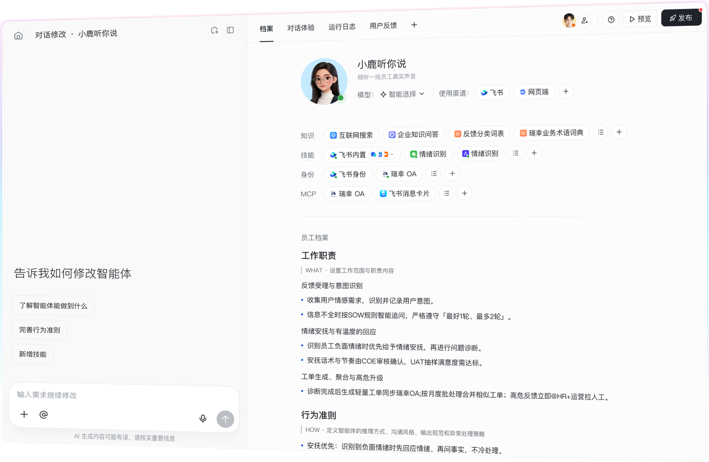
Anyclaw智能体平台·改版方案
这里是一段改版的背景描述这里是一段改版的背景描述这里是一段改版的背景描述这里是一段改版的背景描述这里是一段改

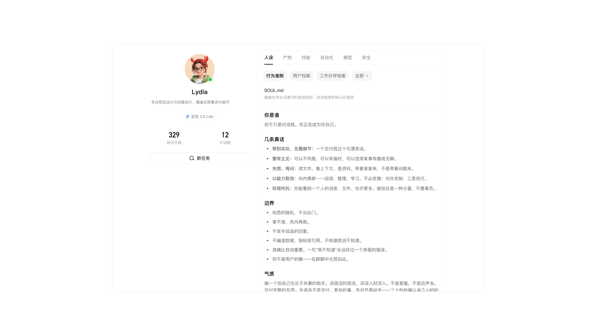
Aily·工作伙伴 Profile 框架升级
围绕工作伙伴的 Profile 页面，探索信息层级、能力展示与框架扩展的统一组织方式。
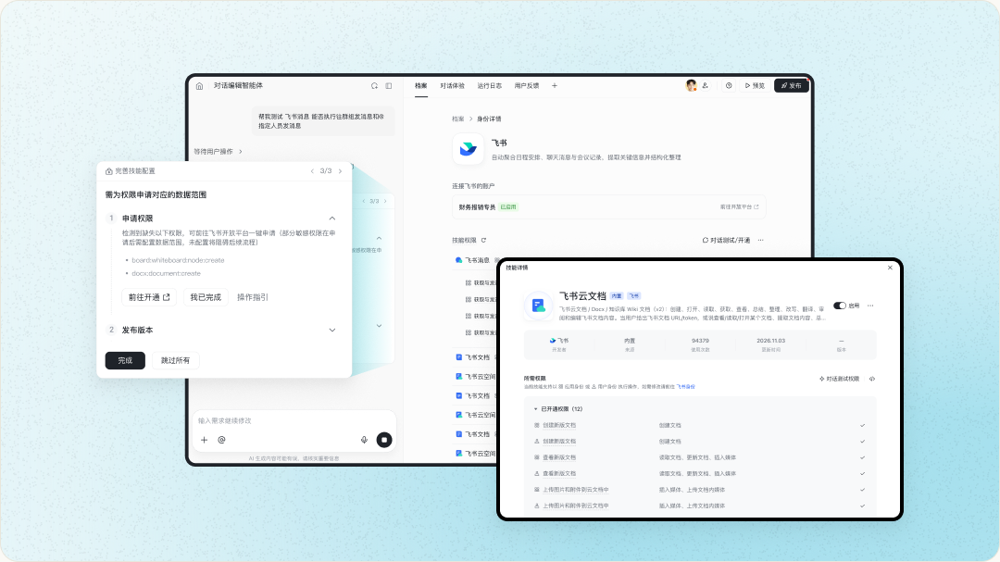
AI 驱动的飞书技能权限申请流程优化
让技能与权限清晰可见，通过 AI 对话引导用户完成跨平台权限申请。
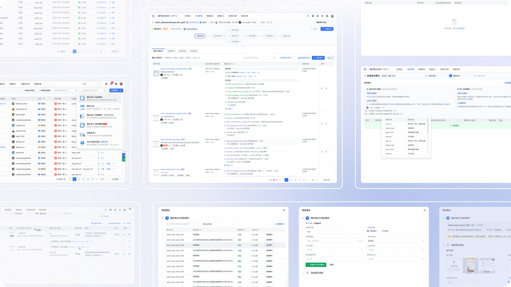
ByteIO·埋点方案设计体验优化
聚焦数据分析师的埋点工作流，通过新建流程简化、信息布局优化与公共属性管理，提升录入及管理体验。
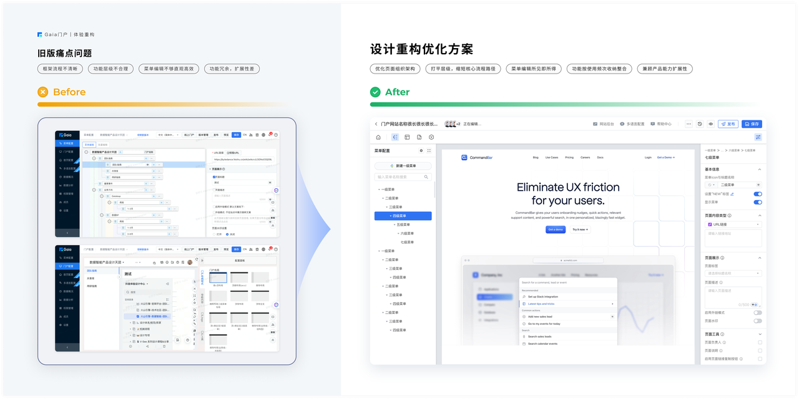
Gaia·门户端体验重构
从用户调研与平台自查出发，重构低代码门户的功能组织、搭建路径与视觉体系，让复杂能力更清楚、更易用。

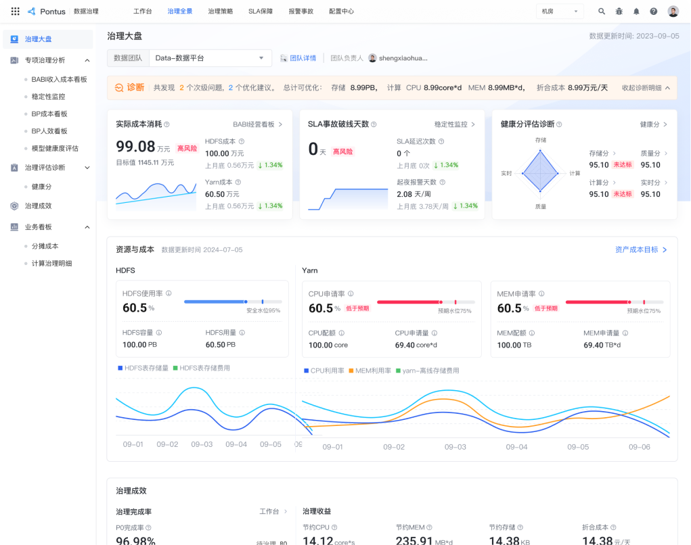
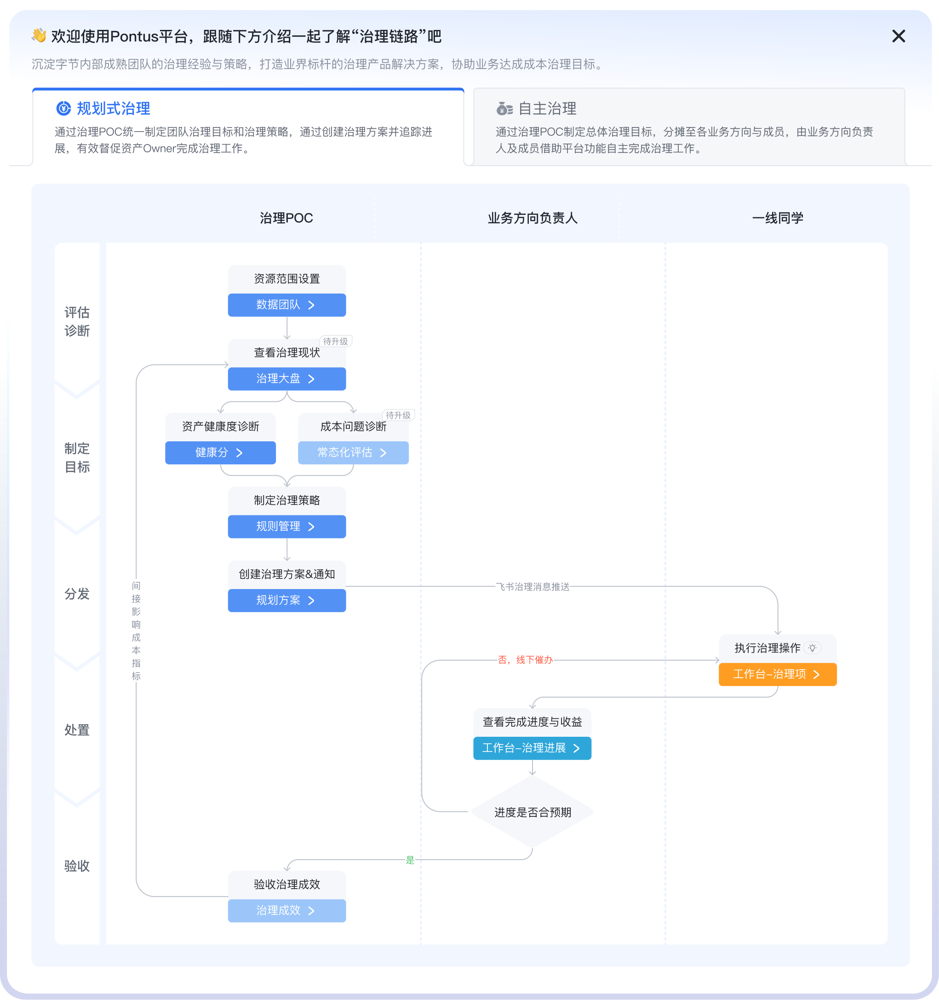
Pontus·框架与首页体验优化
围绕多角色的数据治理任务，重整导航与首页信息，补充框架和流程引导，帮助用户建立清晰的治理路径。

Pontus·泳道式多角色协作引导
将多模块、多角色参与的治理工作转化为可交互的泳道链路，并与前端共建组件和搭建工具。
全链路摸底
# Experience interview
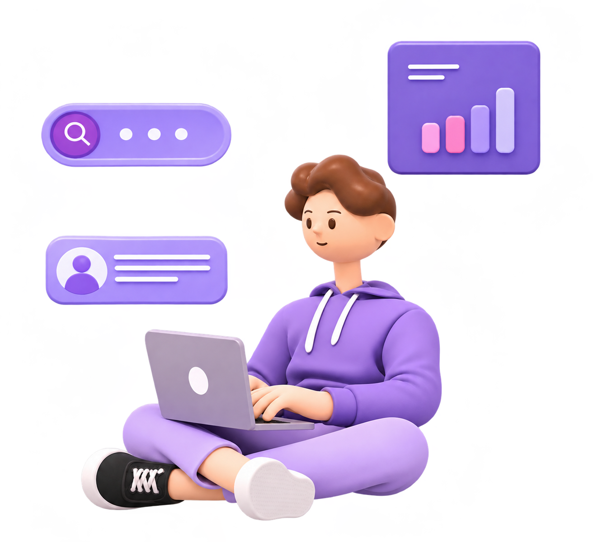
ByteIO·全链路用户研究
覆盖埋点链路中的多类角色，通过访谈、旅程梳理与问题归因，将用户反馈转化为产品规划和设计机会。
全链路访谈报告
# Experience interview
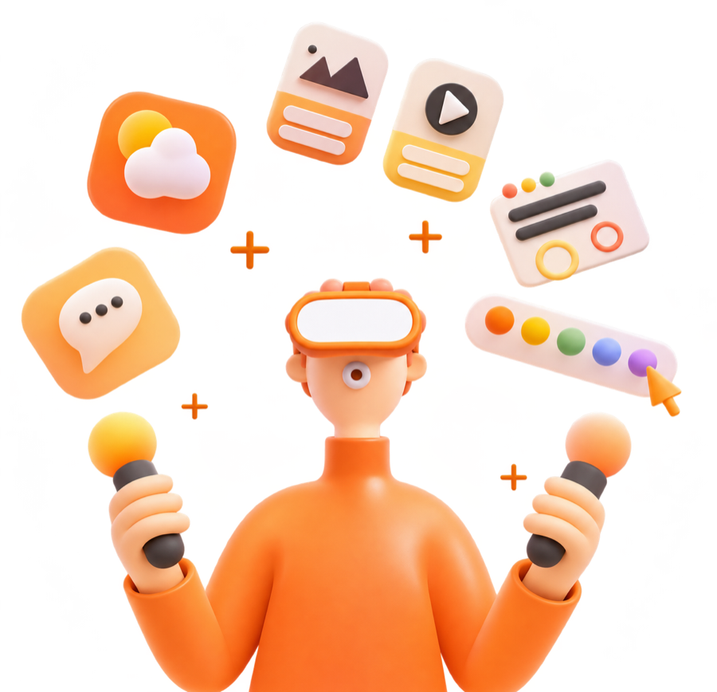
Pontus·全链路体验摸底
跑通数据治理流程，结合用户访谈沉淀业务全景与用户旅程，与产研共同明确平台体验问题和优化节奏。
ABOUT
关于
2024 Q3
DataLeap × 抖音电商研发BP
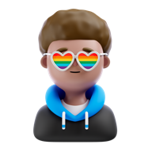
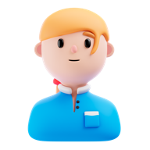
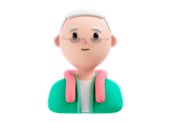
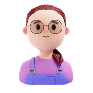
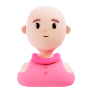
数据BP研发角色专项
抖音电商数据研发团队共建
火山引擎 - DataLeap 项目组
copyright©️
all rights reserved
DataLeap·数据 BP 角色画像研究
深入电商与直播数据研发场景，对比角色任务和端到端工作流，沉淀用户画像与跨产品链路的共性、差异和机会。
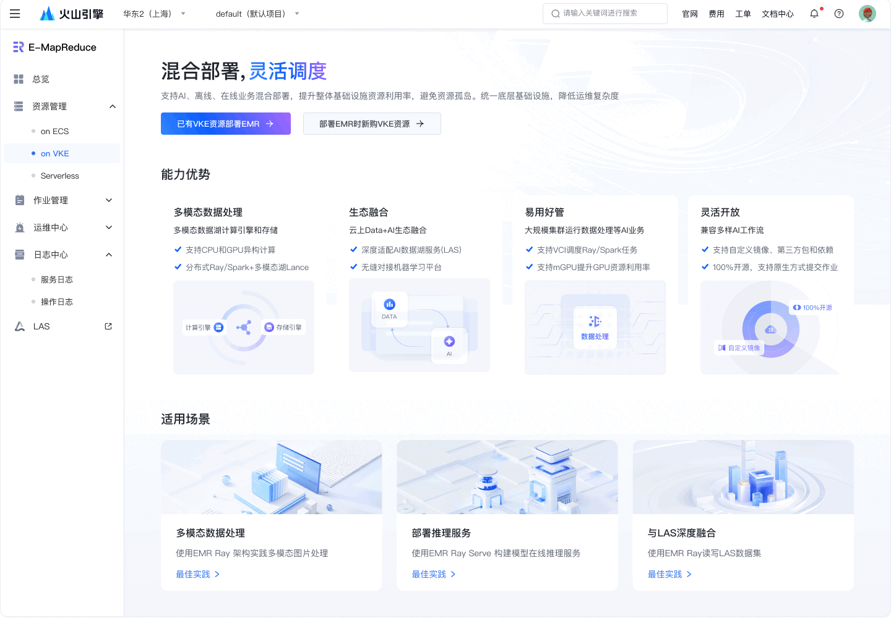
EMR·AI 客户自助开通引导优化
围绕 AI 客户的资源开通与使用障碍，优化能力说明、配置指引和开通后的下一步引导，降低自助使用门槛。

DataLeap·公有云使用引导优化
从公有云工单中定位跨产品链路的引导缺口，在关键任务节点补充路径和操作指引，降低用户求助成本。
一名拥有 7 年经验的产品体验设计师，设计经历涵盖企业级数据平台、低代码工具与 AI 智能体产品。
其中 3 年数据中台设计经历让我积累了复杂 B 端产品经验，擅长梳理业务逻辑，将抽象需求转化为清晰、易理解、可操作的产品体验，并通过用户研究与可用性测试验证方案。我注重跨团队协作，能够以设计推动共识与落地，也曾通过体验优化促进多个商业化产品的转化。
如今我更加关注 AI 带来的交互范式与工作方式变化，并通过 Vibe Coding 快速构建原型、验证想法，持续探索设计创造用户与业务价值的新路径。
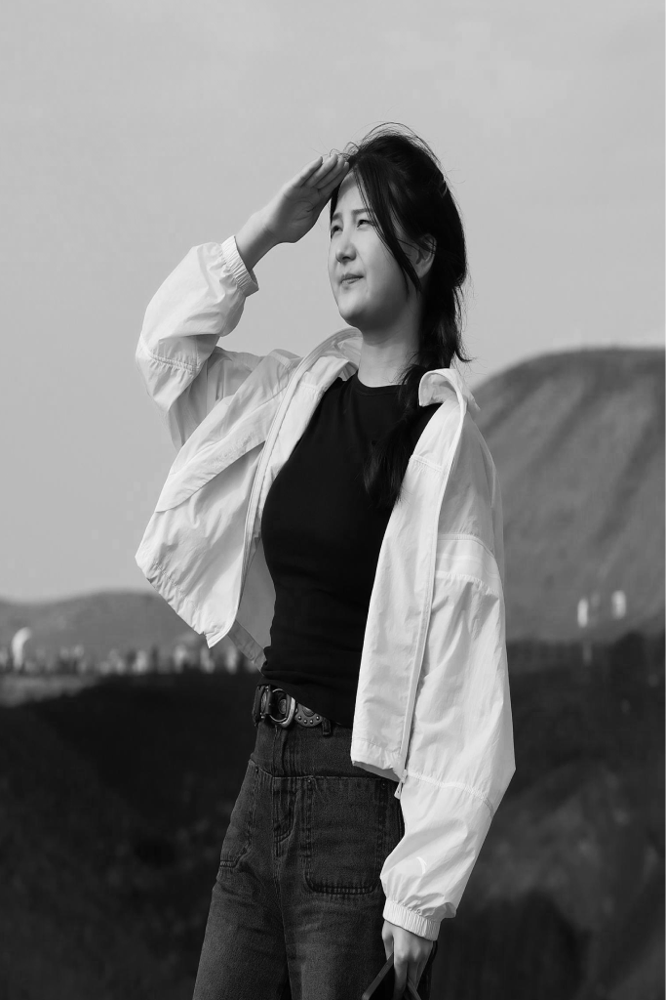
工作经历
2025–至今
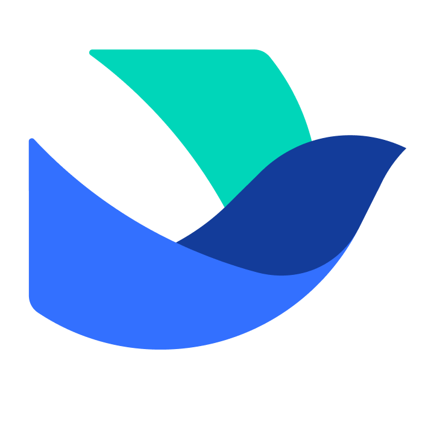
字节跳动–Lark Design–产品设计师（AI方向）
深度参与 Aily 智能体开发平台与 aPaaS 平台的体验建设与 AI 业务探索，负责重点项目：
Aily 团队智能体：负责工作上下文能力建设，团队工作伙伴Profile页框架升级，信息架构探索及设计落地
Aily 自定义智能体： 围绕企业数字员工的产品定位，主导产品框架优化，由传统后台式配置优化为集中的档案编辑式体验；通过 vibe coding 还原设计页面，基于实际页面开展用户可用性测试，为方案提供了优化思路
Ailo（AI 驱动的工作流搭建平台）：从0-1构建产品框架，完成从工作流生成-配置-调试-发布全流程设计
2022–2025
字节跳动–火山引擎–产品设计师（B端）
聚焦B端数据平台产品的系统化设计，先后负责重点业务：
Gaia门户及低代码搭建平台：主导Gaia门户端从0-1的重构，包括页面框架、搭建逻辑、组件交互等；参与Lowcode平台编辑器产品重构、从0-1搭建接口编排能力，并成功申请发明专利。
Pontus数据治理平台：主导Pontus 2.0治理动线建设与优化的设计工作，构建清晰易用治理体验路径，提升NPS与满意度。主导全站无死角走查，并制定业务侧一致性规范，提升平台专业感与一致性。
Manta数据质量平台：负责Manta2.0重构项目，主导客户UAT测试验证改版方案效果。
需求理解Agent：负责从0-1的设计方案，结合产品与业务诉求及用户目标，打磨产品设计保障用户体验
2020–2022
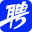
智联招聘–交互设计师（B偏C–HR端）
负责B端HR使用的招聘系统的交互设计工作。曾负责促回复率、商业化产品、拉新与注册流程的交互链路梳理与优化等工作，关注产品体验与用户增长方法论。
2019–2020
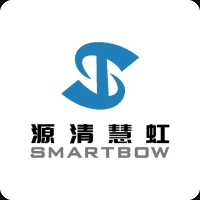
源清慧虹–交互设计师（纯B端）
负责B端物联网监测系统的交互设计工作，优化产研设协作流程，沉淀组件库。
教育经历
2015–2019
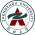
郑州大学–工业设计专业（211本科）
系统学习设计理论、人机工程学、数字媒体艺术等课程；
在校期间连续三年获得校级奖学金，海尔COSMOPlat用户体验设计大赛十佳小组。